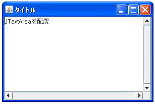

- Home ›
- Swing ›
- JScrollPaneクラス
スクロールバーの表示条件を設定する
スクロールバーについて指定しないコンストラクタを使った場合など、デフォルトでは必要になった時にだけスクロールバーが表示されます。必要になった時と言うのはスクロールペインの中に配置されたコンポーネントがスクロールさせないと全部を表示出来なくなった場合です。最初からコンポーネントが表示しきれないほど大きい場合もありますし、テキストエリアのように文字を追加していった結果として表示しきれなくなる場合があります。
今回はスクロールバーを表示する条件を設定する方法について確認します。コンストラクタで設定する方法とメソッドで設定する方法があります。
まずコンストラクタで設定する場合を確認します。2つあります。まず1つ目はスクロールペインに配置するコンポーネントとスクロールバーの設定を行うコンストラクタです。
JScrollPane
public JScrollPane(Component view,
int vsbPolicy,
int hsbPolicy)
ビューの位置を 1 組のスクロールバーを使用して制御できるビューポート内に ビューコンポーネントを表示する JScrollPane を作成します。スクロールバー のポリシーは、スクロールバーがいつ表示されるかを指定します。たとえば、 vsbPolicy が VERTICAL_SCROLLBAR_AS_NEEDED であれば、垂直スクロールバー はビューが垂直方向に収まらない場合にだけ表示されます。利用可能なポリシー の設定は setVerticalScrollBarPolicy(int) および setHorizontalScrollBarPolicy(int) にリストされています。 パラメータ: view - スクロール区画のビューポートに表示するコンポーネント vsbPolicy - 垂直スクロールバーのポリシーを指定する整数 hsbPolicy - 水平スクロールバーのポリシーを指定する整数
2つ目はスクロールバーの設定だけ行うコンストラクタです。
JScrollPane
public JScrollPane(int vsbPolicy,
int hsbPolicy)
スクロールバーのポリシーを指定して空の (ビューポートのビューがない) JScrollPane を作成します。利用可能なポリシーの設定は setVerticalScrollBarPolicy(int) および setHorizontalScrollBarPolicy(int) にリストされています。 パラメータ: vsbPolicy - 垂直スクロールバーのポリシーを指定する整数 hsbPolicy - 水平スクロールバーのポリシーを指定する整数
この2つのコンストラクタの違いはスクロールペインに配置するコンポーネントを同時に指定しているかどうかだけです。そこで2つ目のコンストラクタで説明を行います。
1番目の引数に垂直方向のスクロールバーの表示条件を指定します。設定可能な値は次の3つです。
| 値 | 説明 |
|---|---|
| JScrollPane.VERTICAL_SCROLLBAR_AS_NEEDED | 必要になった時に表示する |
| JScrollPane.VERTICAL_SCROLLBAR_NEVER | 常に表示しない |
| JScrollPane.VERTICAL_SCROLLBAR_ALWAYS | 常に表示する |
デフォルトでは「VERTICAL_SCROLLBAR_AS_NEEDED」となっています。常にスクロールバーを表示したり常に表示しない場合には他の値をこのメソッドを使って設定して下さい。
2番目の引数に水平方向のスクロールバーの表示条件を指定します。設定可能な値は次の3つです。
| 値 | 説明 |
|---|---|
| JScrollPane.HORIZONTAL_SCROLLBAR_AS_NEEDED | 必要になった時に表示する |
| JScrollPane.HORIZONTAL_SCROLLBAR_NEVER | 常に表示しない |
| JScrollPane.HORIZONTAL_SCROLLBAR_ALWAYS | 常に表示する |
デフォルトでは「HORIZONTAL_SCROLLBAR_AS_NEEDED」となっています。垂直方向の場合と同じく常にスクロールバーを表示したり常に表示しない場合には他の値をこのメソッドを使って設定して下さい。
実際の使い方は次のようになります。
JScrollPane sp =
new JScrollPane(JScrollPane.VERTICAL_SCROLLBAR_ALWAYS,
JScrollPane.HORIZONTAL_SCROLLBAR_ALWAYS);
メソッドを使って設定する
コンストラクタでスクロールバーの表示条件を設定する以外に、作成されたJScrollPaneクラスのオブジェクトに対してメソッドを使って設定する事も可能です。
まず垂直方向のスクロールバーの表示条件について設定するにはJScrollPaneクラスで用意されている「setVerticalScrollBarPolicy」メソッドを使います。
setVerticalScrollBarPolicy public void setVerticalScrollBarPolicy(int policy)
垂直スクロールバーがスクロール区画にいつ表示されるかを設定します。次に 有効な値を示します。 ScrollPaneConstants.VERTICAL_SCROLLBAR_AS_NEEDED ScrollPaneConstants.VERTICAL_SCROLLBAR_NEVER ScrollPaneConstants.VERTICAL_SCROLLBAR_ALWAYS パラメータ: policy - 上記の 3 つの値のいずれか 例外: IllegalArgumentException - policy が上記の正当な値のどれかではない場合
設定可能な値はコンストラクタで指定する場合と同じです。では次に水平方向のスクロールバーの表示条件につして設定するにはJScrollPaneクラスで用意されている「setHorizontalScrollBarPolicy」メソッドを使います。
setHorizontalScrollBarPolicy public void setHorizontalScrollBarPolicy(int policy)
水平スクロールバーがスクロール区画にいつ表示されるかを設定します。オプ ションは次のとおりです。 ScrollPaneConstants.HORIZONTAL_SCROLLBAR_AS_NEEDED ScrollPaneConstants.HORIZONTAL_SCROLLBAR_NEVER ScrollPaneConstants.HORIZONTAL_SCROLLBAR_ALWAYS パラメータ: policy - 上記の 3 つの値のいずれか 例外: IllegalArgumentException - policy が上記の正当な値のどれかではない場合
設定可能な値はコンストラクタで指定する場合と同じです。
実際の使い方は次のようになります。
JScrollPane sp = new JScrollPane(); sp.setVerticalScrollBarPolicy(JScrollPane.VERTICAL_SCROLLBAR_ALWAYS); sp.setHorizontalScrollBarPolicy(JScrollPane.HORIZONTAL_SCROLLBAR_ALWAYS);
サンプルプログラム
では簡単なサンプルを作成して試してみます。
import javax.swing.*;
import java.awt.BorderLayout;
public class JScrollPaneTest3 extends JFrame{
public static void main(String[] args){
JScrollPaneTest3 frame = new JScrollPaneTest3();
frame.setDefaultCloseOperation(JFrame.EXIT_ON_CLOSE);
frame.setBounds(10, 10, 300, 200);
frame.setTitle("タイトル");
frame.setVisible(true);
}
JScrollPaneTest3(){
JTextArea textarea = new JTextArea("JTextAreaを配置");
JScrollPane scrollpane = new JScrollPane(textarea);
scrollpane.setVerticalScrollBarPolicy(JScrollPane.VERTICAL_SCROLLBAR_ALWAYS);
scrollpane.setHorizontalScrollBarPolicy(JScrollPane.HORIZONTAL_SCROLLBAR_ALWAYS);
getContentPane().add(scrollpane, BorderLayout.CENTER);
}
}
上記をコンパイルした後で実行すると次のように表示されます。

今回のサンプルでは垂直及び水平のスクロールバーを常に表示するように設定してあります。その為、スクロールバーが必要で無い状態でもスクロールバーが常に表示されています。
( Written by Tatsuo Ikura )

著者 / TATSUO IKURA
初心者～中級者の方を対象としたプログラミング方法や開発環境の構築の解説を行うサイトの運営を行っています。